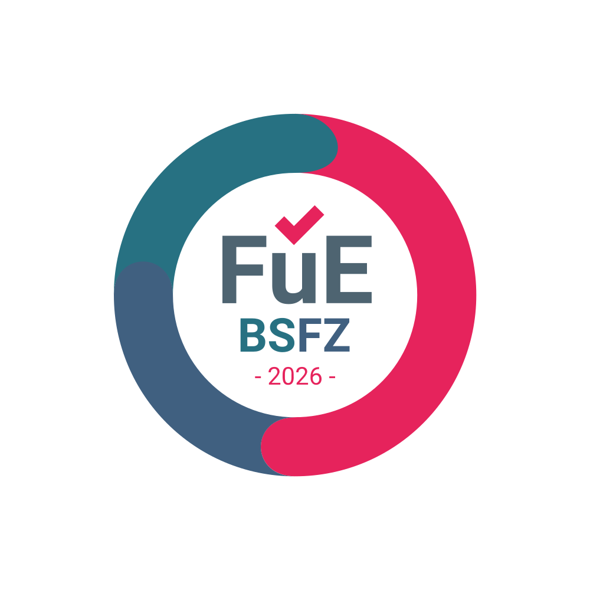

Nicht das einzelne Objekt. Der ganze Bestand.
DealPilot rechnet heute jedes Objekt vollständig durch. In unserem Forschungsvorhaben gehen wir den nächsten Schritt: Wir erforschen, ob sich ein ganzer Immobilienbestand gemeinsam optimieren lässt — passend zum Investor, nachvollziehbar und mit Herkunft an jeder Zahl.

Die Bescheinigungsstelle Forschungszulage hat das Vorhaben im Auftrag des Bundesforschungsministeriums als Forschung und Entwicklung nach dem Forschungszulagengesetz bescheinigt. Bescheinigt ist das Vorhaben — nicht ein fertiges Produkt.
Entstanden an drei Schreibtischen — und an einem Satz.
Jede Zahl braucht eine Herkunft.
DealPilot kommt aus der Gutachtenpraxis. In einem Gutachten muss jede Zahl belegt sein: welcher Gutachterausschuss, welcher Stichtag, welches Modell. Genau diesen Maßstab haben wir in die App gebaut — Objekt für Objekt.
Die Probleme hatten wir zuerst.
Wir kaufen selbst, finanzieren selbst und sitzen selbst mit der Bank am Tisch. Bevor wir eine Zeile gebaut haben, haben wir mit vielen anderen Investoren gesprochen. Daraus wurde das Cockpit für den einzelnen Deal: Cashflow, DSCR, Steuer, Deal Score und die Unterlage für die Bank.
„Optimier mir mal meinen Bestand. Wie machst du das?“
Diese Frage haben wir einem Steuerberater gestellt — als Gedankenspiel: Ein Mandant sitzt vor dir, über 100 Objekte, und sagt genau diesen Satz. Wo setzt du an?
Auf dem Tisch liegen Zahlen. Mieten, Darlehen, Abschreibungen, Kaufdaten. Was fehlt, ist der Zusammenhang. Welche Frist läuft bei welchem Objekt? Was löst ein Verkauf bei den anderen aus? Welcher Freibetrag wird heute verbraucht, den man in drei Jahren dringender bräuchte?
Die Beratung selbst ist der schöne Teil. Die Arbeit davor ist das Problem: jedes Objekt aufbereiten, jede Wechselwirkung hinterfragen, jede Variante gegen alle anderen stellen. Also nimmt man sich die offensichtlichen Themen vor, und der Rest geht unter. Nicht, weil jemand schlecht berät — sondern weil diese Aufbereitung von Hand kaum zu leisten ist.
Aus genau dieser Lücke ist es entstanden.
Seit 2026 arbeiten wir daran, als bescheinigtes Forschungs- und Entwicklungsvorhaben. Drei Jahre, offener Ausgang. Zwei Ansätze haben wir bereits verworfen — so sieht Forschung aus.
Neu ist nicht die Steuerlogik. Die steht im Gesetz.
Neu ist die Frage, ob sich ein ganzer Bestand überhaupt gemeinsam optimieren lässt.
Im Portfolio konkurriert jedes Objekt mit jedem anderen um dieselben knappen Größen: das zu versteuernde Einkommen, die Drei-Objekt-Grenze, die 15-Prozent-Grenze, Freibeträge, Fristen. Und weil der Steuersatz auf die Summe wirkt, verändert jede Entscheidung bei einem Objekt die Rechnung für alle anderen. Das Problem lässt sich nicht in Einzelteile zerlegen.
Je Objekt und Jahr gibt es mehrere Möglichkeiten: privat halten, in eine Gesellschaft geben, verkaufen — und wann. Bei 100 Objekten entstehen mehr Kombinationen, als sich je durchrechnen lassen. Und welche davon richtig ist, kann heute niemand nachschlagen. Das zeigt sich erst nach Jahren.
Und dann die zweite Frage: Was passt zu mir?
Die eine richtige Lösung gibt es nicht. Wer auf laufenden Ertrag setzt, braucht eine andere Strategie als jemand, der Vermögen aufbauen oder an die nächste Generation übergeben will. Derselbe Bestand. Zwei Investoren. Zwei verschiedene richtige Antworten. Deshalb erforschen wir das Verfahren abhängig vom Profil des Investors.
Bestehende Werkzeuge lösen je ein Stück. Keines das Ganze.
Unser Vorhaben verbindet, was bisher getrennt ist: die Wechselwirkung zwischen den Objekten, die progressive Steuer, mehrere Rechtsträger und die Fristen — und sucht darin nach der besten Lösung für genau diesen Investor.
Wie das Verfahren im Einzelnen arbeitet, ist Gegenstand der Forschung und wird hier bewusst nicht beschrieben.
Gebaut für den Tisch, an dem entschieden wird.
DealPilot wird in der Praxis von Steuerberatungskanzleien begleitet — darunter die Schmidt & Partner Steuerberatungsgesellschaft PartG mbB aus Hüllhorst. Die Kanzleien sagen uns, wo es in der Praxis hakt, und prüfen, ob das Ergebnis dort ankommt, wo es gebraucht wird. Die Forschung führen wir selbst durch.
Die Rollen bleiben klar: Die Beratung gehört in die Kanzlei. Wir wollen die Aufbereitung liefern, damit dort wieder Zeit für das Gespräch ist.
Was es nicht ist: keine Steuer- und keine Anlageberatung und keine Empfehlung. Das Ergebnis ist die Grundlage für das Gespräch mit Kanzlei und Bank — die Entscheidung bleibt beim Investor und seinen Beratern.
Zehn Arbeitspakete, ein Ziel.
Jedes Arbeitspaket folgt demselben Zyklus: Annahme, Versuch, Messung — fortführen oder verwerfen.
Die Grundlage steht in DealPilot.
Das Vorhaben baut auf dem auf, was DealPilot heute je Objekt führt: Kaufpreisaufteilung, Restnutzungsdauer und AfA, Finanzierung, die Steuer Jahr für Jahr, Halter und Gesellschaften mit Überführung, Ankauf-Stand und Soll/Ist im Bestand. Wie das aussieht, zeigen die Videos.
Zur Videothek → · Zum vollen Leistungsumfang → · Der Weg auf einer Karte →